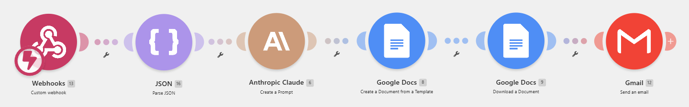

Build 002 · AI-connected
AI Meeting MinutesLive
Paste a transcript, get back clean minutes: summary, decisions, actions with owners, and open questions, as a PDF in your inbox. Free to use.
Free, no sign-up. The form is at the bottom of this page, with sample data if you have no transcript to hand.
How it works for you
What lands in your inbox
A 100 to 160 word narrative summary of the meeting, followed by the action list so owners can see their tasks without opening anything.
- Overview
- Key discussion points, grouped by topic
- Decisions
- Actions: owner, task, deadline, priority
- Open questions
The pipeline behind it

Built not to bluff
- Extracts only what is in the transcript; never invents names, deadlines, decisions, or numbers.
- Distinguishes decisions that were explicitly agreed from suggestions that were merely raised.
- Actions get an owner only when the transcript makes ownership clear; otherwise they are marked Unassigned.
- Missing deadlines are marked "Not specified" rather than guessed.
- Non-transcript or too-thin input fails gracefully: the reply explains the problem instead of fabricating minutes.
Honest limits
Try it now
Add your details, paste a transcript, and the minutes arrive by email. Your email address is used only to deliver these minutes: no mailing list, no follow-ups, nothing else.
Use this fictional weekly delivery sync: one click fills the form below, or copy any piece into the matching field. Just add your name and email.
Transcripts are processed via the Anthropic Claude API to generate your minutes. API data is not used to train AI models. Please only submit transcripts you have permission to share.
Designed and built end to end by Mir in a single session: form intake, structured LLM extraction to strict JSON, templated document generation, PDF export, and automated email delivery. Stack: Make.com, Anthropic Claude API (Sonnet), Google Docs, Google Drive, Gmail. The form above posts directly to the live scenario's webhook.